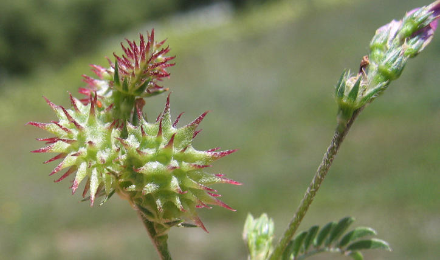
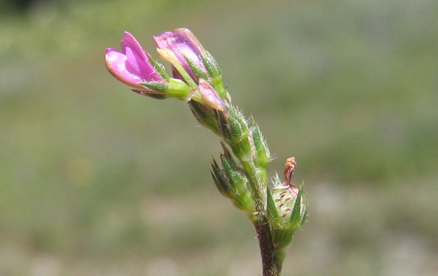
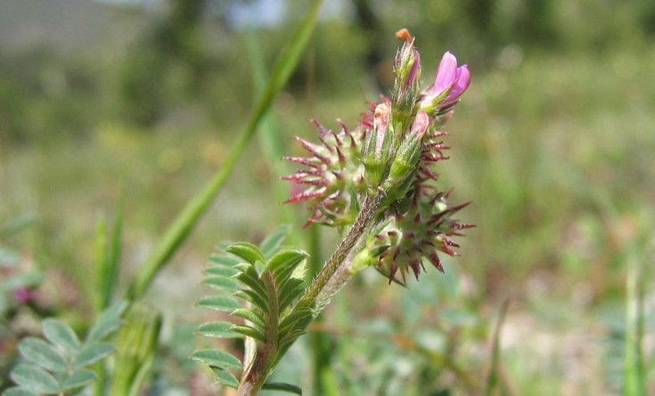
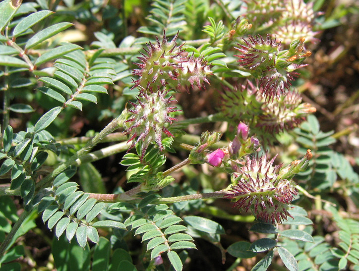
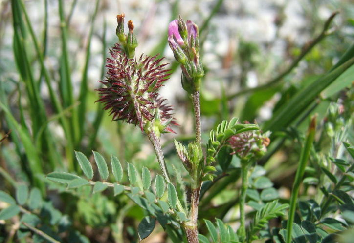

| PHRYGANA | Fauna | Flora |
additions nouveautés |
espèces species |
contact -
info - commentaires phrygana1 (at) gmail.com |
| diversité crétoise -- Cretan diversity | |||||
| Onobrychis caput-galli (L.) LAM. |
| 148 | Flora | FABACEAE | Onobrychis |
 Onobrychis caput-galli Melambes (Agios Giorgos) 06 avril 2008 |
| fr: le Sainfoin tête-de-coq en: Cockscomb sainfoin | |
| Plante à tige poilue à poils appliqués. | |
| Feuilles: composées imparipennées ( 7 - 15 folioles). Folioles lancéolées. | |
| Fleurs: 2 - 6 fleurs purpurines (7 - 9 mm) rapprochées en grappes courtes, lâches, sur un pédoncule plus court que les feuilles. Corolle dépassant à peine les dents du calice. Dents linéaires pointues. | |
| Fruit: une gousse en forme de tête arrondie, à côtes saillantes et petites fosses, la suture couverte d'épines (2 - 5 mm) de longueur inégale. | |
| Hauteur: 10 - 40 cm | Type biologique: thérophyte ramifié |
| Floraison: mars avril mai | |
| Altitudes: 0 - 1200 m | |
| Statut en Crète: indigène - native | |
| Biotopes en Crète: phrygana, sables maritimes, terrains vagues, olivaies. | |
| Distribution: région Méditerranéenne | |
| Espèce héliophile. | |
|
 Onobrychis caput-galli Melambes (Agios Giorgos) 06 avril 2008 |
|
 Onobrychis caput-galli Melambes (Agios Giorgos) 06 avril 2008 |
|
 Onobrychis caput-galli Melambes (Agios Giorgos) 06 avril 2008 |
|
 Onobrychis caput-galli Melambes (Agios Giorgos) 06 avril 2008 |
| 05 juillet 2010 |
| © paul fontaine -- © Phrygana.eu 2007 -- 2013 |